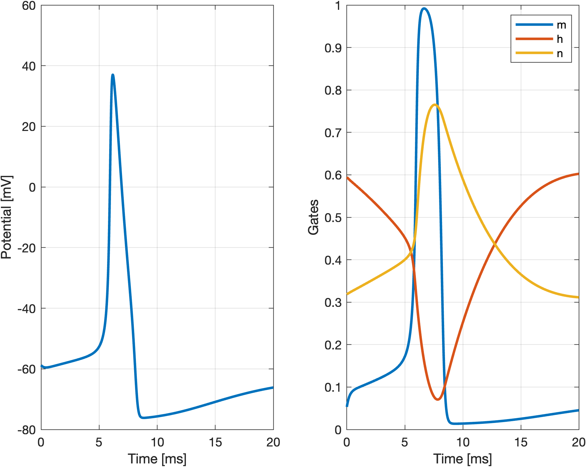
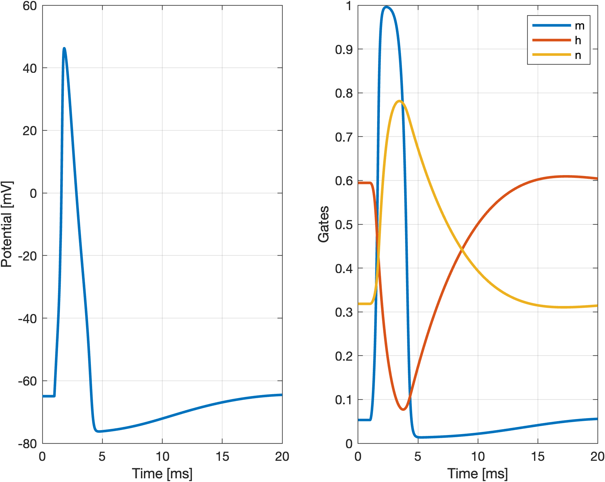
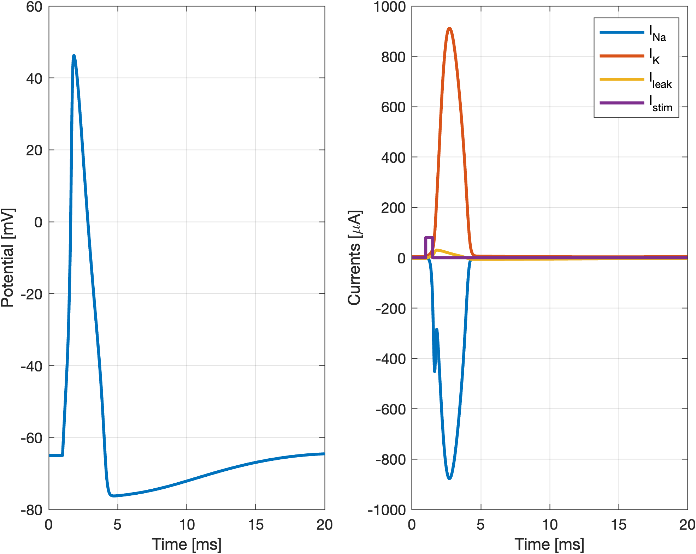
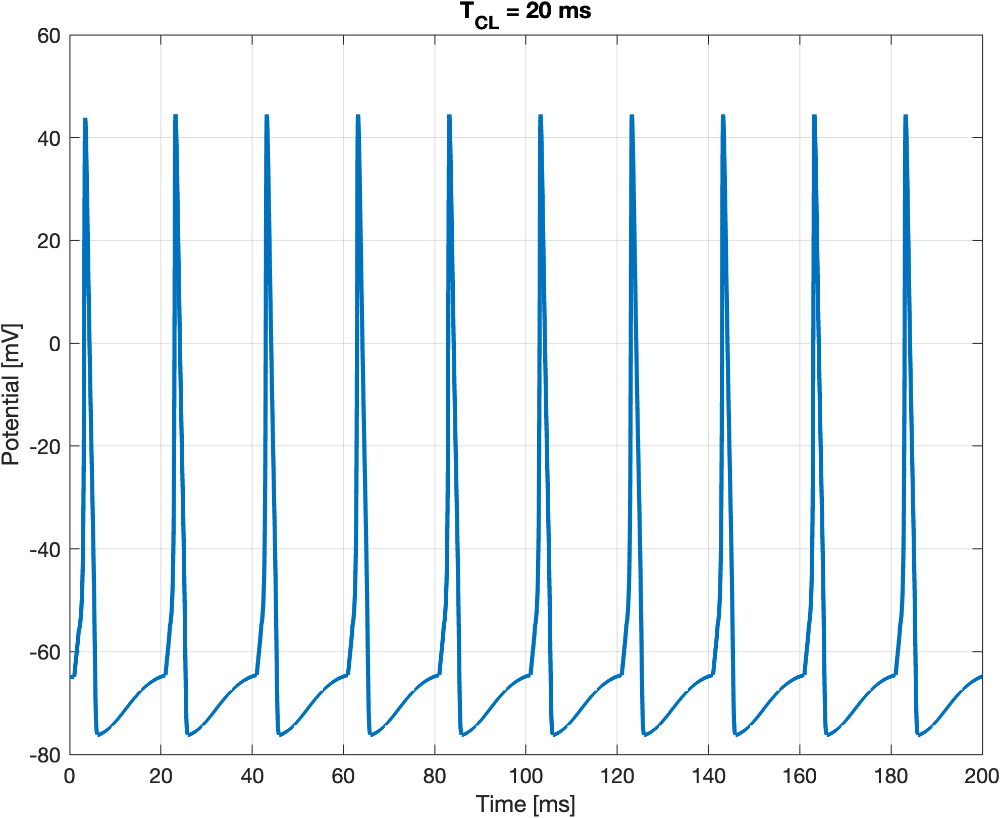
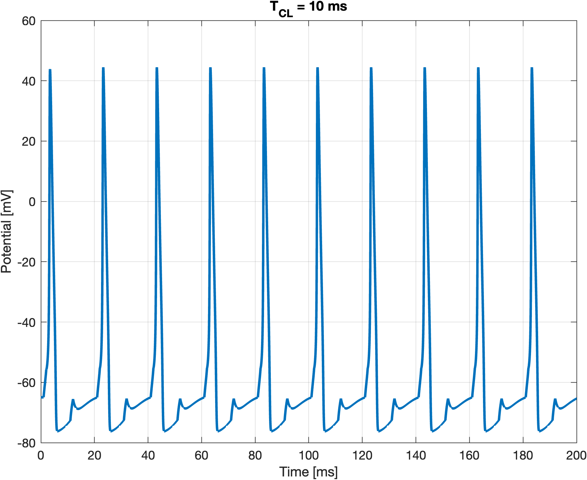
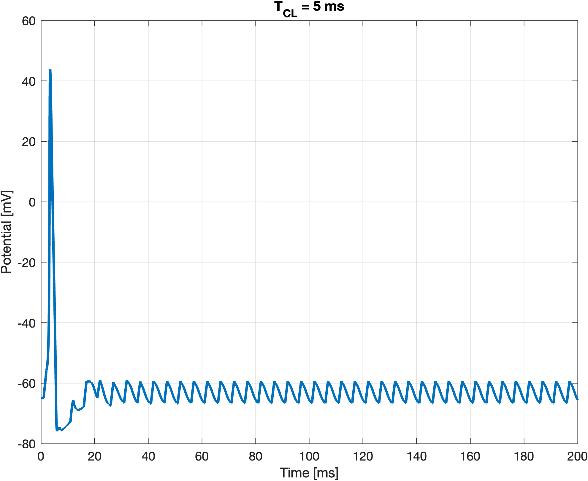
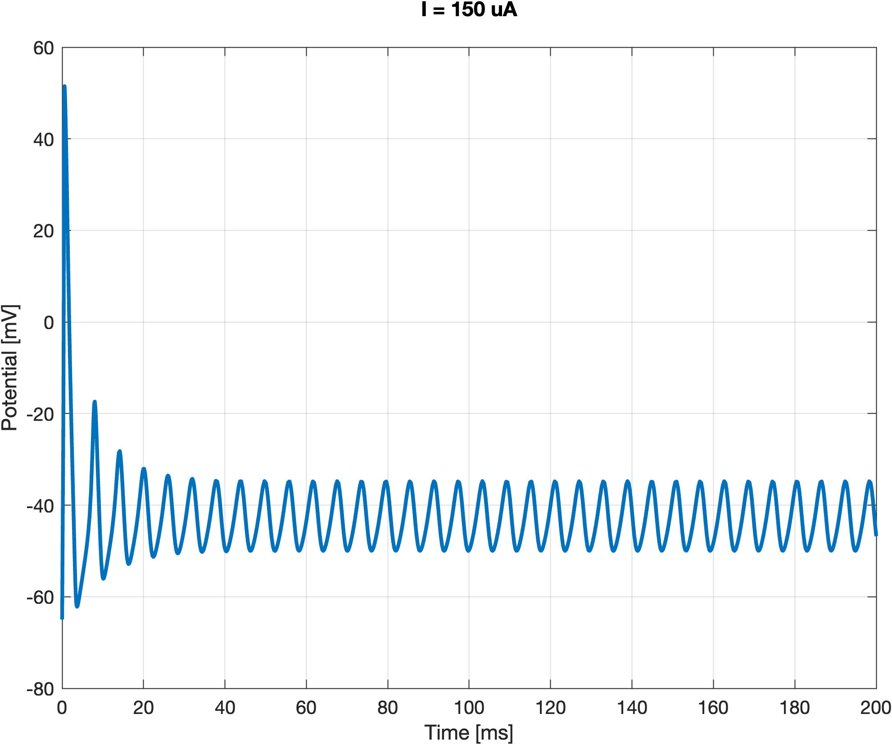
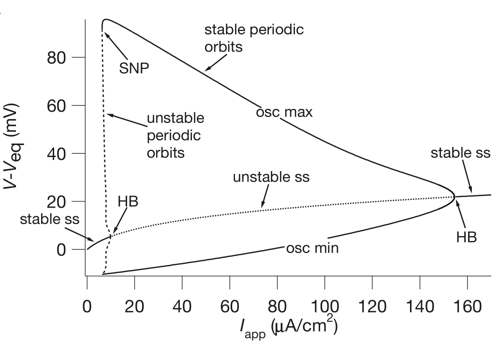
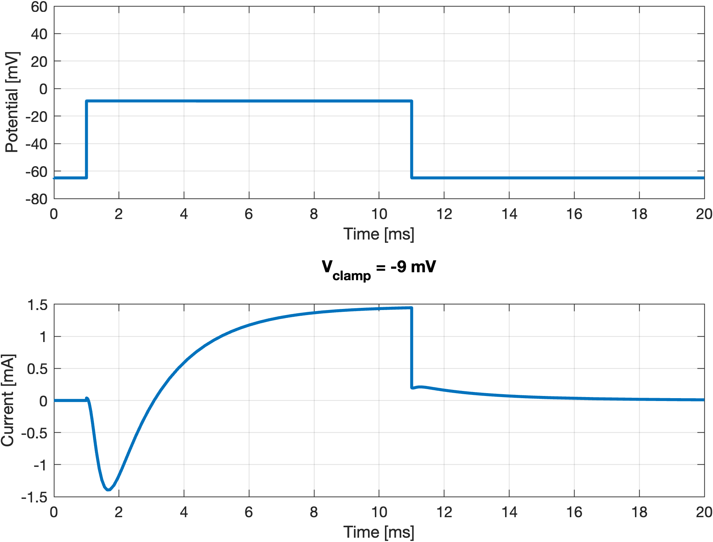
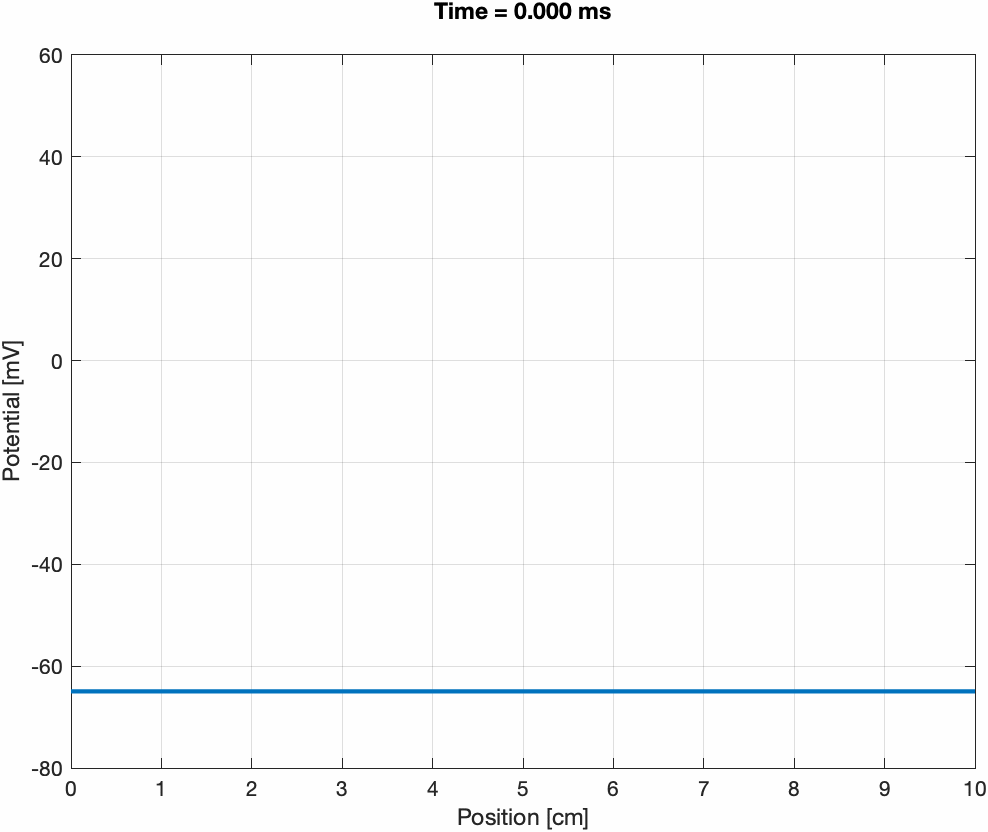

Lab 06: Electrophysiology
The Hodgkin-Huxley model
The Hodgkin-Huxley model for the action potential is a system of 4 ODEs. The first ODE is the balance of transmembrane currents: \[ C_\mathrm{m} \frac{\mathrm{d}V_\mathrm{m}}{\mathrm{d}t} + \mathcal{I}_\mathrm{ion}(V,m,h,n) = I_\mathrm{stim}(t), \]
where \(\mathcal{I}_\mathrm{ion}(V,m,h,n)\) is the current through the ion channels, which depends on the gating variables \(m\), \(h\), and \(n\). In the Hodgkin-Huxley model we have: \[ \mathcal{I}_\mathrm{ion}(V,m,h,n) = g_\mathrm{Na} m^3 h(V_\mathrm{m}-V_\mathrm{Na}) + g_\mathrm{K}n^4 (V_\mathrm{m}-V_\mathrm{K}) + g_\ell(V_\mathrm{m} - V_\ell), \]
where \(g_\mathrm{Na}\) and \(g_\mathrm{K}\) are the maximal conductivities for sodium and potassium, respectively. The gating variables \(m(t)\), \(n(t)\), and \(h(t)\) all satisfy the same ODE (with different coefficients), as follows \[ \begin{aligned} \frac{\mathrm{d}m}{\mathrm{d}t} &= \alpha_m(V_\mathrm{m})(1-m) - \beta_m(V_\mathrm{m}) m, \\ \frac{\mathrm{d}h}{\mathrm{d}t} &= \alpha_h(V_\mathrm{m})(1-h) - \beta_h(V_\mathrm{m}) h, \\ \frac{\mathrm{d}n}{\mathrm{d}t} &= \alpha_n(V_\mathrm{m})(1-n) - \beta_n(V_\mathrm{m}) n, \end{aligned} \]
where the coefficients are (experimentally fitted) functions of \(V_\mathrm{m}\).
Use the following code for the model.
hhmodel.m
function [dy,varargout] = hhmodel(t,y,varargin)
% Hodgkin-Huxley model for nerves
% Create input parser object
p = inputParser;
% Add required inputs
addRequired(p, 't');
addRequired(p, 'y');
% Define optional parameters with their default values
addParameter(p, 'Istim', @(t) 0*t); % no stimulation current
addParameter(p, 'g_Na', 120); % sodium conductance [mS]
addParameter(p, 'g_K', 36); % potassium conductance [mS]
addParameter(p, 'g_l', 0.3); % leakage conductance [mS]
addParameter(p, 'V_K', -77); % Nernst potential K [mV]
addParameter(p, 'V_Na', 55); % Nernst potential Na [mV]
addParameter(p, 'V_l', -54.4); % Nernst potential leakage [mV]
addParameter(p, 'Cm', 1.0); % membrane capacitance [uF]
% Parse input arguments
parse(p, t, y, varargin{:});
% Assign parameters to variables
Istim = p.Results.Istim;
g_Na = p.Results.g_Na;
g_K = p.Results.g_K;
g_l = p.Results.g_l;
V_K = p.Results.V_K;
V_Na = p.Results.V_Na;
V_l = p.Results.V_l;
Cm = p.Results.Cm;
% State variables
%
sy = size(y);
disp(t);
y = reshape(y,4,[]);
V = y(1,:);
m = y(2,:);
h = y(3,:);
n = y(4,:);
% gate rates [ms^{-1}]
%
alpha_m = -0.1*(40+V)./(exp(-(40+V)/10)-1);
beta_m = 4*exp(-(V+65)/18);
alpha_h = 0.07*exp(-(V+65)/20);
beta_h = 1./(exp(-(35+V)/10)+1);
alpha_n = -0.01*(55+V)./(exp(-(55+V)/10)-1);
beta_n = 0.125*exp(-(V+65)/80);
dy = zeros(size(y));
dy(2,:) = alpha_m.*(1-m) - beta_m.*m;
dy(3,:) = alpha_h.*(1-h) - beta_h.*h;
dy(4,:) = alpha_n.*(1-n) - beta_n.*n;
% currents [uA]
INa = g_Na * m.^3.*h .* (V-V_Na);
IK = g_K * n.^4 .* (V-V_K);
Il = g_l * (V-V_l);
% Determine number of input arguments for Istim
if nargin(Istim) == 1
I_stim = Istim(t);
elseif nargin(Istim) == 2
I_stim = Istim(t, V);
else
error('Istim function handle must accept either 1 or 2 arguments');
end
dy(1,:) = -1/Cm*(IK + Il + INa - I_stim);
dy = dy(:);
dy = reshape(dy,sy);
% Extra outputs if requested
if nargout > 1
varargout{1} = [INa;IK;Il;I_stim];
end
if nargout > 2
varargout{2} = p.Results;
end
endAction potential simulation
- Compute the resting membrane potential and the equilibrium values for the gating variables.
We integrate for very long time, e.g., \(T_\mathrm{end} = 2000\,\text{ms}\). Then we take the final values. A possible code is:
y0 = [0,0,0,0];
Te = 2000;
% the ODE is stiff, we use ode15s
opts = odeset('AbsTol',1e-10,'RelTol',1e-10);
sol = ode15s(@hhmodel, [0 Te], y0, opts);
y0 = sol.y(:,end)';
disp(y0);The resting membrane potential is \(V_r\approx -64.9538\), and \(m\approx 0.0532\), \(h\approx 0.5945\), \(n \approx 0.3184\). Note that these values corresponds to \(m_\infty(V_r)\), \(h_\infty(V_r)\), and \(n_\infty(V_r)\), respectively, where \[ p_\infty(V) = \frac{\alpha_p(V)}{\alpha_p(V)+\beta_p(V)}, \]
for \(p\in\{m,h,n\}\).
- Try to simulate an action potential by raising the initial resting potential. Find the threshold potential, that is minimal deviation from the resting potential so to obtain an action potential.
We can try manually, and obtain that an increase of \(\Delta V\approx 6.15\,\text{mV}\) is sufficient to trigger an action potential. Hence, the threshold is roughly \(V_\mathrm{rest} + \Delta V \approx -58.8\,\text{mV}\).
dV = 6.15;
sol = ode15s(@hhmodel, [0 20], y0 + [dV,0,0,0], opts);
Vrest = y0(1);
Vthres = Vrest+dV;
disp(Vthres);
fig = figure();
subplot(121);
plot(sol.x,sol.y(1,:),'LineWidth',2.0);
xlabel('Time [ms]');
ylabel('Potential [mV]');
grid on; ylim([-80,60]);
subplot(122);
plot(sol.x,sol.y(2:end,:)','LineWidth',2.0);
xlabel('Time [ms]');
ylabel('Gates');
legend('m','h','n');
grid on;
- Implement a square-pulse for the stimulus current, and find the combination of height (intensity) and width (duration) that yields an action potential. As initial condition, use the resting state from point 1., and set \(T_\mathrm{end} = 20.0\,\text{ms}\).
The square pulse has the form: \[ I_\mathrm{stim}(t) = \begin{cases} I_\mathrm{max}, & 0 < t - t_0 < t_\mathrm{dur}, \\ 0, & \text{otherwise}.\end{cases} \]
where \(t_0\) is the onset, \(t_\mathrm{dur}\) the duration, and \(I_\mathrm{max}\) the current intensity.
A possible implementation is as follows:
% square stimulus
t0 = 1;
tdur = 0.5;
Imax = 80;
I_square = @(t) Imax*(sign(t-t0)-sign(t-t0-tdur))/2.0;
%I_square = @(t) Imax*(t>t0)*(t<t0+tdur);
% we need this to capture the stimulus
opts = odeset(opts,'MaxStep',0.1);
fun = @(t,y) hhmodel(t,y,'Istim',I_square);
Te = 20.0;
sol = ode15s(fun, [0 Te], y0, opts);
fig = figure();
subplot(121);
plot(sol.x,sol.y(1,:),'LineWidth',2.0);
xlabel('Time [ms]');
ylabel('Potential [mV]');
grid on; ylim([-80,60]);
subplot(122);
plot(sol.x,sol.y(2:end,:)','LineWidth',2.0);
xlabel('Time [ms]');
ylabel('Gates');
legend('m','h','n');
grid on;
The duration and intensity must be such that the transmembrane potential reaches a threshold value. We approximate the model as: \[ C_\mathrm{m} \frac{\mathrm{d}V_\mathrm{m}}{\mathrm{d}t} + g_\mathrm{eff}(V_\mathrm{m}-V_\mathrm{rest}) = I_\mathrm{stim}(t), \]
where \(g_\mathrm{eff}\) is the effective conductivity at the resting membrane potential \(V_\mathrm{rest}\). The solution for a generic current, assuming \(V_\mathrm{m}(0)=V_\mathrm{rest}\), is as follows: \[ V_\mathrm{m}(t) = V_\mathrm{rest} + \frac{1}{C_\mathrm{m}} \int_0^t e^{-(t-s)/\tau} I_\mathrm{stim}(s)\,\mathrm{d}s, \tag{1}\]
where \(\tau = C_\mathrm{m}/g_\mathrm{eff}\). For the square pulse we can carry out the integral and find: \[ V_\mathrm{m}(t) = V_\mathrm{rest} + \left\{\begin{aligned} & 0, && t \le t_0, \\ & \frac{I_\mathrm{max}}{g_\mathrm{eff}} \Bigl(1-e^{-(t-t_0)/\tau}\Bigr), && t_0 < t < t_0 + t_\mathrm{dur}, \\ & \frac{I_\mathrm{max}}{g_\mathrm{eff}} \Bigl(1-e^{-t_\mathrm{dur}/\tau}\Bigr)e^{-(t-t_0-t_\mathrm{dur})/\tau} , && t \ge t_0 + t_\mathrm{dur}. \end{aligned}\right. \]
It is the same as charging a capacitor. Suppose that \(V_\mathrm{thres}\) is the threshold potential for an action potential. Then, the condition is: \[ V_\mathrm{rest} + \frac{I_\mathrm{max}}{g_\mathrm{eff}} \Bigl(1-e^{-t_\mathrm{dur}/\tau}\Bigr) > V_\mathrm{thres}. \]
We can approximate \(g_\mathrm{eff}\) in at least 2 ways. The first approach is based on the observation that the function hhmodel implements the right hand side of the ODE, so we can easily obtain the total ionic current \(\mathcal{I}_\mathrm{ion}\) at a given voltage \(V_\mathrm{m}\). Comparing the Hodgkin-Huxley model with the approximation Equation A.4 we have that \[
g_\mathrm{eff} = \left. \frac{\partial\mathcal{I}_\mathrm{ion}}{\partial V_\mathrm{m}}\right|_{\mathrm{rest}}.
\]
we can approximate this value numerically,
dy = (hhmodel(0,y0+[1e-6,0,0,0])-hhmodel(0,y0))/1e-6;
g_eff = -dy(1);and we obtain \(g_\mathrm{eff} \approx 0.6807\,\text{mS}\).
The second approach consists in noting that if we rearrange the terms we can always write \[ \mathcal{I}_\mathrm{ion} = g\cdot(V_\mathrm{m}-V_\mathrm{rest}), \]
hence we have that: \[ g_\mathrm{eff} = g_\mathrm{Na} m^3_\infty(V_\mathrm{rest}) h_\infty(V_\mathrm{rest}) + g_\mathrm{K} n^4_\infty(V_\mathrm{rest}) + g_\ell. \]
V = y0(1);
alpha_m = -0.1*(40+V)./(exp(-(40+V)/10)-1);
beta_m = 4*exp(-(V+65)/18);
alpha_h = 0.07*exp(-(V+65)/20);
beta_h = 1./(exp(-(35+V)/10)+1);
alpha_n = -0.01*(55+V)./(exp(-(55+V)/10)-1);
beta_n = 0.125*exp(-(V+65)/80);
m_inf = alpha_m./(alpha_m + beta_m);
h_inf = alpha_h./(alpha_h + beta_h);
n_inf = alpha_n./(alpha_n + beta_n);
g_Na = 120;
g_K = 36;
g_l = 0.3;
g_eff = g_Na*m_inf^3*h_inf + g_K*n_inf^4 + g_l;
disp(g_eff);Since \(C_\mathrm{m} = 1\,\mu\text{F}\), we have \(\tau \approx 1.45\,\text{ms}\). For instance, with \(t_\mathrm{dur} = 1\,\text{ms}\), we obtain a threshold value of \(I_\mathrm{max}\approx 8.5\,\mu\text{A}\). In practice, it is enough \(I_\mathrm{max}\approx 6.5\,\mu\text{A}\). The reason for the discrepancy is that \(g_\mathrm{eff}\) is not constant, because as soon as \(V_\mathrm{m}\) increases, also the gating variables changes (see the above figure.)
- Visualize the currents using the extended output, that is
[~,currents] = fun(sol.x,sol.y);
fig = figure();
subplot(121);
plot(sol.x,sol.y(1,:),'LineWidth',2.0);
xlabel('Time [ms]');
ylabel('Potential [mV]');
grid on; ylim([-80,60]);
subplot(122);
plot(sol.x,currents','LineWidth',2.0);
xlabel('Time [ms]');
ylabel('Currents [\muA]');
legend('I_{Na}','I_K','I_{leak}','I_{stim}');
grid on;
- Take \(t_\mathrm{dur} = 2\,\text{ms}\) and \(I_\mathrm{max} = 5\,\mu\text{A}\). Implement a periodic stimulation protocol with a fixed value of cycle length \(T_\mathrm{CL}\). Start from \(T_\mathrm{CL} = 100\,\text{ms}\) and reduce it until it not possible to provoke an action potential anymore.
We can use the function mod to implement a periodic stimulus:
% train of stimuli
t0 = 1;
tdur = 1.0;
Imax = 10;
tCL = 20;
I_train = @(t) Imax*(mod(t-t0,tCL)<tdur);
opts = odeset(opts,'MaxStep',0.1);
fun = @(t,y) hhmodel(t,y,'Istim',I_train);
Te = 200.0;
sol = ode15s(fun, [0 Te], y0, opts);
fig = figure();
plot(sol.x,sol.y(1,:),'LineWidth',2.0);
xlabel('Time [ms]');
ylabel('Potential [mV]');
grid on; ylim([-80,60]);
title(sprintf('T_{CL} = %g ms',tCL));


This phenomenon is called refractoriness of the action potential. It is very important in cardiac electrophysiology, as it prevents ectopic stimuli to cause a dangerous arrythmia.
- Implement a constant-in-time current \(I_\mathrm{stim}(t)\equiv I_\mathrm{max}\). Increase the current from zero and show that in a certain range the system has a limit cycle. Is the transition smooth or catastrophic?
Imax = 150;
I_const = @(t) Imax;
sol = ode15s(@(t,y) hhmodel(t,y,'Istim',I_const), [0 200], y0);
fig = figure();
plot(sol.x,sol.y(1,:),'LineWidth',2.0);
xlabel('Time [ms]');
ylabel('Potential [mV]');
title(sprintf('I = %g uA\n',Imax));
grid on;
The transition occurs around \(I_\mathrm{max} \approx 5.5\,\mu\text{A}\), and it is catastrophic, because the amplitude of the oscillations is not small initially. The second bifurcation occurs at \(I_\mathrm{max} \approx 180\,\mu\text{A}\), and it is a supercritical Hopf bifurcation, hence not catastrophic.
Actually, something more complicated happens.

In the diagram above (Figure 5.7 from Keener and Sneyd (2009)), we have a subcritical Hopf bifurcation at some point. However, stable oscillations are possible also for \(I_\mathrm{max}\) less than the bifurcation value, because we have 2 limit cycles, one stable and another unstable. At some value of \(I_\mathrm{max}\), there is a limit point of cycles (a collision between the cycles), and they both disappear. Hence, the system has no limit cycles only before the limit point. You can try to compute the same diagram with MatCont.
Voltage-clamp
Hodgkin and Huxley invented the voltage-clamp technique, a key tool for measuring the transmembrane currents and establishing the gating mechanism. The voltage-clamp approach is a feedback control that can inject a current in the axon so to keep the transmembrane potential at some given level, \(V_\text{clamp}\).
The simplest model is as follows: \[ C_\mathrm{m} \frac{\mathrm{d}V_\mathrm{m}}{\mathrm{d}t} + \mathcal{I}_\mathrm{ion}(V) = -\kappa (V - V_\text{clamp}), \]
for some large \(\kappa>0\). In fact, for \(\kappa \gg 1\), the system has a stable equilibrium \(V=V_\text{clamp}\). Implement the voltage clamp. Note that the function hhmodel allows Istim to be a function of time and voltage.
This is a possible solution:
kappa = 1e5;
V0 = -65; V1 = -9;
t0 = 1.0;
tdur = 10.0;
Vclamp = @(t) V0 + (V1-V0).*(t >= t0).*(t <= t0 + tdur);
I_clamp = @(t,V) -kappa*(V - Vclamp(t));
hhmodel_clamped = @(t,y) hhmodel(t,y,'Istim',I_clamp);
sol = ode15s(hhmodel_clamped, [0 20.0], y0);
[~,currents,params] = hhmodel_clamped(sol.x,sol.y);
Itot = sum(currents(1:3,:),1)/1e3;
fig = figure();
subplot(211);
plot(sol.x,sol.y(1,:),'LineWidth',2.0);
xlabel('Time [ms]');
ylabel('Potential [mV]');
grid on; ylim([-80,60]);
subplot(212);
plot(sol.x,Itot,'LineWidth',2.0);
xlabel('Time [ms]');
ylabel('Current [mA]');
title(sprintf('V_{clamp} = %g mV\n',V1));
grid on;
Hyperkalemia
Hyperkalemia is an increase of potassium in the body. High level of potassium are dangerous for the body because the excitability of cells is affected. By using Nernst equilibrium equation, \[ V_\mathrm{K} = \frac{R T}{F}\log \Bigl(\frac{[\mathrm{K}]_e}{[\mathrm{K}]_i}\Bigr), \]
show that as \([\mathrm{K}]_e\) increases from \(20\,\text{mM}\) self-sustained oscillations appear. Find the values of bifurcations, as above. For the constants, use \(R = 8.314\,\text{J}\cdot\text{K}^{-1}\cdot\text{mol}^{-1}\) (gas constant), \(F = 9.648\cdot 10^4\,\text{C}\cdot\text{mol}^{-1}\) (Farad constant), \(T = 26 + 273.15\,\mathrm{K}\), \([\mathrm{K}]_i = 397\,\text{mM}\).
% intra- and extra-cellular ion concentrations
Na_i = 50; Na_e = 437; % mM
K_i = 397; K_e = 20; % mM
Cl_i = 40; Cl_e = 556; % mM
R = 8.314; % [J/K/mol] gas constant
T = 26+273.15; % [K] temperature
F = 9.648e4; % [C/mol] Faraday constant
RTF = R*T/F*1e3; % [mV]
K_e = 20;
VK = RTF * log(K_e/K_i);
[T,Y] = ode15s(@(t,y) hhmodel(t,y,'Istim',I_square,'V_K',VK), [0 100], y0);
figure;
plot(T,Y(:,1),'LineWidth',2.0);
xlabel('Time [ms]');
ylabel('Potential [mV]');
title(sprintf('K_e = %g mM\n',K_e));
grid on;
ylim([-80,60]);We have that for \([\mathrm{K}]_e \approx 30\,\text{mM}\) we have oscillations, until \([\mathrm{K}]_e \approx 60\,\text{mM}\). The first bifurcation is catastrophic, the second one is not.
Tetrodotoxin
Tetrodotoxin (TTX) is a powerful neurotoxin, famous for the puffer fish. TTX acts by blocking the sodium channels, hence making them unavailable for action potential formation.
Here is how we can model it. If \(P_0\) represents the total number of \(\ce{Na+}\) channels, and we denote by \(\ce{P}\) and \(\ce{B}\) respectively the number of non-blocked and blocked channels, then the reaction is \[ \ce{P + TTX <=>[k_{-1}][k_1] B}. \]
In order words, \(\ce{TTX}\) is an inhibitor. The equilibrium is \[ \frac{P}{P_0} = \frac{1}{1 + \ce{TTX}/K_1}. \]
Since \(K_1 \approx 2.5\,\text{nM}\), a very small quantity of \(\ce{TTX}\) is sufficient to block several channels. (At \(K_1\), half of the channels are blocked.)
Next, in the Hodgkin-Huxley model the sodium conductance is proportional to the number of open channels. Hence, \(g_\mathrm{Na} = 120\,\text{mS}\) at \(P=1\), so: \[ g_\mathrm{Na}(\ce{TTX}) = \frac{120}{1 + \ce{TTX}/K_1}. \]
Find the quantity of \(\ce{TTX}\) that blocks axonal propagation.
Here below a possible implementation:
K1 = 2.5;
TTX = 0.6;
g_Na = 120/(1+TTX/K1);
opts = odeset(opts,'MaxStep',0.1);
[T,Y] = ode15s(@(t,y) hhmodel(t,y,'Istim',I_square,'g_Na',g_Na), [0 100], y0,opts);
figure;
plot(T,Y(:,1),'LineWidth',2.0);
xlabel('Time [ms]');
ylabel('Potential [mV]');
title(sprintf('g = %g mS\n',g_Na));
grid on;
ylim([-80,60]);A value of \(\ce{TTX} = 0.57\,\text{nM}\) is already sufficient to block the propogation.
The cable equation
This section is just for your information. We will see reaction-diffusion equations in the second part of the course.
The cable equation is a 1-D reaction-diffusion model for axonal propagation. The equation reads as follows: \[ p\Bigl( C_\mathrm{m} \frac{\partial V_\mathrm{m}}{\partial t} + \mathcal{I}_\mathrm{ion}(V,m,h,n) - I_\mathrm{stim}(x,t) \Bigr) = \frac{1}{r_i + r_e}\frac{\partial^2 V_\mathrm{m}}{\partial x^2}, \]
for \(V_\mathrm{m}(x,t)\), \(x\in[0,L]\), \(t>0\) is the transmembrane potential. Note that \(V_\mathrm{m}\) is a function of the coordinate \(x\), which represents the longitudinal direction of the cable.
The additional parameters are \(p\), the perimeter of the axon, and \(r_i\), \(r_e\), respectively the intra- and extra-cellular electrical resistivity. We also assume homogeneous Neumann boundary conditions for \(V_\mathrm{m}\), that is: \[ \frac{\partial V_\mathrm{m}}{\partial x}(0,t) = \frac{\partial V_\mathrm{m}}{\partial x}(L,t) = 0. \]
We can readily use the previous code, hhmodel.m, to simulate the the reaction-diffusion model. We will consider a discretization in space as follows: given a grid \(x_i = h\cdot i\) of \(N\) nodes, with \(0 \le i \le N-1\) and \(h = \frac{L}{N-1}\), we approximate the Laplacian of \(V_\mathrm{m}\) at \(x_i\) with the formula: \[
\frac{\partial^2 V_\mathrm{m}(x_i,t)}{\partial x^2} \approx \frac{V_\mathrm{m}(x_{i-1},t)-2V_\mathrm{m}(x_i,t)+V_\mathrm{m}(x_{i+1},t)}{h^2}.
\]
Therefore, we end up with a system of ODEs of \(4 \cdot N\) equations in the unknowns \(V_\mathrm{m}(x_i,t)\), \(m(x_i,t)\), \(h(x_i,t)\), \(n(x_i,t)\).
The system can still be solved with ode15s, with some care for the dimensions of the variables and by providing some information on the sparsity of the Jacobian matrix.
cable_hhmodel.m
%% 1-D ode15s
Cm = 1.0; % membrane capacitance [uF/cm^2]
L = 10; % length [cm]
Te = 15; % simulation time [ms]
a = 0.0238; % axon radius [cm]
p = 2*pi*a; % perimeter [cm]
Rc = 35.4; % cytoplasm resistance [Ohm cm]
Ai = pi*a^2; % cross section area [cm^2]
ri = Rc/Ai; % intracellular resistivity [Ohm/cm]
re = 0.0; % extracellular resistivity
D = 1/(p*(ri+re)) * 1e3; % diffusion [mS]
dx = 0.02; % spatial resolution [cm]
x = 0:dx:L;
Nx = length(x);
% diffusion operator in 1-D
e = ones(Nx,1);
A = spdiags([e -2*e e],-1:1,Nx,Nx);
A(1,2) = 2; A(end,end-1) = 2; % non-symmetric version
A = D/dx^2*A;
J = spdiags([e e e],-1:1,Nx,Nx);
I = speye(Nx,Nx);
O = sparse(Nx,Nx);
% initial conditions
m = 0.0532;
h = 0.5945;
n = 0.3184;
Vr = -64.9538;
% solution vector
Y0 = repmat([Vr,m,h,n]',1,Nx);
I_diff = @(~,V) reshape(A*reshape(V,Nx,[]),1,[]);
I_stim = @(t,y) 80*(t<2)*(t>1)*(repmat(x,1,size(y,2)/Nx)<L/20);
fun = @(t,y) hhmodel(t,y,'Istim',@(t,y) I_stim(t,y) + I_diff(t,y));
Jpattern = sparse(4*Nx,4*Nx);
ii = reshape(1:4*Nx,4,[])';
Jpattern(ii(:),ii(:)) = [J, I, I, I; ...
I, I, O, O; ...
I, O, I, O; ...
I, O, O, I];
opts = odeset('Vectorized','on','JPattern',Jpattern);
sol = ode15s(fun, [0,Te], Y0(:), opts);
Y = reshape(sol.y, 4, Nx, []);
t = linspace(0,Te,201);
Ydense = reshape(deval(sol,t), 4, Nx, []);
U = squeeze(Ydense(1,:,:)); % potential
[T,X] = meshgrid(t,x);
contourf(T,X,U);
xlabel('Time [ms]');
ylabel('Space [cm]');
%% animation
fig = figure;
pl = plot(x,U(:,1),'LineWidth',2.0);
ylim([-80 60]);
grid on;
xlabel('Position [cm]');
ylabel('Potential [mV]');
title(sprintf('Time = %.3f ms\n',t(1)));
pause;
%exportgraphics(fig,'labep_cable.gif','Append',false,'Resolution',150);
for k = 2:length(t)
pl(1).YData = U(:,k);
title(sprintf('Time = %.3f ms\n',t(k)));
pause(0.01);
%exportgraphics(fig,'labep_cable.gif','Append',true,'Resolution',150);
endThe solution should look like this
